← Overall ranking · Lab gallery
F06 · Request New Form — version ranking
Family task: New request form (/requests/new): describe a project across 10 locked fields (Brief/Budget/Timeline & requirements), understand constraints via help, attach files locally, save a draft without losing work on cancel/error.
Baseline context: Frozen per DECISIONS SS2: H1 New request, section titles, 10 fields with verified limits (Title 5-100, Description 20-5000, Category enum, budget placeholders 50000/150000 INR flexible, dates 2026-10-24/2026-11-23, requirements one-per-line), sticky Cancel + Save draft. Tooltip texts are lab-authored (documented, not production copy).
Leading version(s): V2 · Confidence: medium — Complete screenshot set + interaction/axe/keyboard runs in one pinned environment; single evaluator; designed empty/loading/error states generally have no public trigger and were not observed unless a version's task notes say so; system-font fallback instead of Outfit.
Tie groups: none (all gaps > 2.0) · Production comparison: Comparison place #2 of 6 at 77.5. Lab-only winner remains V2. Practical tie-break used inside a 2.0-point group.
Manual repairs applied · 29 October 2026. V1–V5 have been updated. F06 fix log and current verification.
Scores, issues and screenshots below are the original pre-fix review, not a new ranking. “Source (unmodified)” refers to that historical snapshot; the linked pages now include repairs.
Lab-only scores
| Rank | Version | Total /100 | Task clarity (w25) | Usability (w20) | Visual craft (w15) | Responsive (w15) | Accessibility (w15) | Integrity (w10) | Major+ issues |
|---|---|---|---|---|---|---|---|---|---|
| #1 | V2 · Three Steps | 77.5 | 4 /4 | 3 /4 | 3 /4 | 3 /4 | 2 /4 | 3 /4 | 0 |
| #2 | V5 · Bento Split | 73.8 | 4 /4 | 3 /4 | 3 /4 | 2 /4 | 2 /4 | 3 /4 | 0 |
| #3 | V1 · Classic Brief | 71.2 | 3 /4 | 3 /4 | 3 /4 | 3 /4 | 2 /4 | 3 /4 | 0 |
| #4 | V3 · Compact Desk | 63.8 | 3 /4 | 3 /4 | 2 /4 | 2 /4 | 2 /4 | 3 /4 | 0 |
| #5 | V4 · Guided Narrative | 58.8 | 3 /4 | 2 /4 | 3 /4 | 2 /4 | 1 /4 | 3 /4 | 1 |
Formula: total = Σ(weight × score ÷ 4). Dimension scores are integers 0–4 against fixed anchors (25 task clarity · 20 usability · 15 visual craft · 15 responsive · 15 accessibility · 10 integrity). Totals within 2.0 form a practical group; ties are ordered by task clarity, fewer major/critical issues, then responsive score; exact ties after these checks share rank (=).
Production page report and comparison rank
Comparison place #2 of 6 at 77.5. Lab-only winner remains V2. Practical tie-break used inside a 2.0-point group.
Live production reference. Same rubric, separate from lab version records. Not a lab template and not an automatic winner. Route: /requests/new. Outcome: reviewed. Confidence: medium.
| Comparison place | Page | Total /100 | Task clarity | Usability | Visual craft | Responsive | Accessibility | Integrity | Major+ issues |
|---|---|---|---|---|---|---|---|---|---|
| #2 | Production · /requests/new | 77.5 | 4 /4 | 3 /4 | 3 /4 | 3 /4 | 2 /4 | 3 /4 | 1 |
Heading New request, with groups Brief, Budget, and Timeline & requirements. Visible labels included Title, Description, Category, Budget min, Budget max, Currency, Budget is flexible, Preferred start, Deadline, and Requirements. Save draft was visible and was not used.
Order if production is included
- V2 — 77.5 · comparison #1 · inside a 2.0-point group
- Production — 77.5 · comparison #2 · inside a 2.0-point group
- V5 — 73.8 · comparison #3
- V1 — 71.2 · comparison #4
- V3 — 63.8 · comparison #5
- V4 — 58.8 · comparison #6
Lab-only ranks in the table above are unchanged. Inside a 2.0-point group, task clarity, fewer major issues, then responsive score decide the comparison place.
Observed issues
- Shared shell contrast finding.
Not observed
- Validation was not run because the form was not submitted.
- This route was not separately measured at 390px.
Desktop document overflow was 0 on reviewed routes. An earlier mobile pass of accounts A and B also had no document overflow and a menu control; opening that menu was not proven. Dark mode was not activated. axe-core reported four serious color-contrast nodes on the shared shell. No production screenshot was stored. None stored. Production pages can contain account data.
Shared shell / family-wide findings
- Submit-error alert copy names the raw endpoint ('POST /api/v1/requests failed (designed 502 degraded state)') in client-facing UI - shared across versions; error recovery itself (answers intact + autosave) is good.
- State-preview toggles (Desk/Form/Skeleton/Submit error/Success/Empty) are lab harness UI inside the product surface in all versions.
- All 5 preserve the 10 locked fields and constraints; none scrolls horizontally at tested widths.
Per-version evidence
#3 · V1 · Classic Brief — 71.2
Source (unmodified): client-portal-lab/families/F06-request-new-form/V1/index.html
· Raw evidence: review-evidence/raw/F06-V1-raw.json
Task clarity (3/4): Three numbered sections (Brief/Budget/Timeline) with counters on Title (0/100) and Description (0/5000) state the job plainly; a 'Sections complete 33%' meter on an untouched form is the one confusing signal.
Usability (3/4): Saving with a 2-character title marked 3 fields aria-invalid and showed a recoverable error alert that preserves answers; autosave-on. Help (?) toggles per field.
Visual craft (3/4): Airy stacked cards and a clear sticky Cancel/Save draft footer at both sizes.
Responsive (3/4): No horizontal scroll; sticky footer keeps Save draft reachable on mobile; fields go full-width.
Accessibility (2/4): Labels are present for the 10 locked fields; axe contrast x5 and 19 small mobile targets (help toggles/footer chips) hold it to mixed.
Integrity (3/4): Locked fields/placeholders/dates preserved; footer honestly says changes are local and 'no request sent yet'. Error copy names the raw endpoint (family-shared).
Interaction / task results (V1)
| Task | Result |
|---|---|
| T1_first_screen | H1='New request'; see desktop/mobile top screenshots |
| T2_keyboard | 12/12 stops focus-styled, 12/12 in viewport |
| T3_core_desktop | pass via Save draft w/ invalid short title |
| T3_core_mobile | pass via Save draft w/ invalid short title |
| T4_theme | toggle: pass (dark false->true); dark capture applied=True |
| T5_demo_honesty | honest feedback shown: |
| T6_mobile | h-scroll mobile=0; nav probe opened=True btnW=20; tap<24px=19 |
| T7_axe | desktop: color-contrast x5; dark: color-contrast x6 |
Issues (3)
- minor
F06-V1-I1axe desktop: color-contrast x5 (a[aria-current="page"], button[data-state="populated"]) Fix any of the following: Element has insufficient color contrast of 4.33 (foreground color: #465fff, background color: (axe-core 4.10.2 desktop) - minor
F06-V1-I2axe dark: color-contrast x6 (a[aria-current="page"], button[data-state="populated"]) Fix any of the following: Element has insufficient color contrast of 3.94 (foreground color: #5b7bff, background color: (axe-core 4.10.2 dark) - minor
F06-V1-I319 mobile tap targets under 24px, e.g. [{'text': 'Open navigation menu', 'w': 20, 'h': 35}, {'text': 'Switch to dark mode', 'w': 20, 'h': 35}, {'text': '6 unread notifications', 'w': 20, 'h': 35}] (raw tapTargetsMobile)

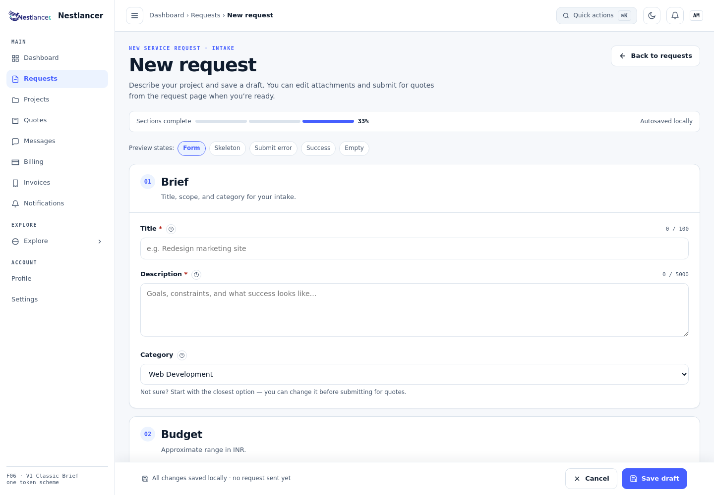

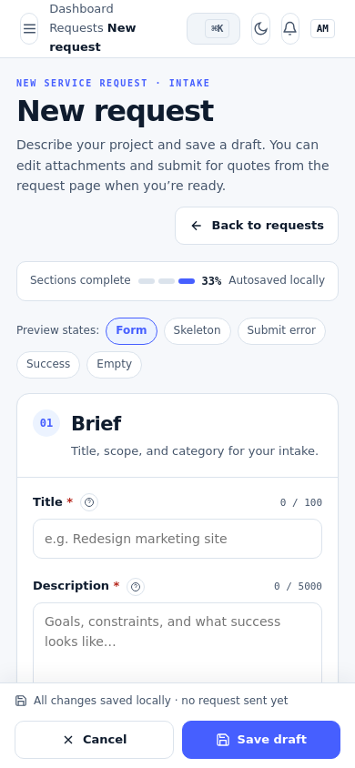

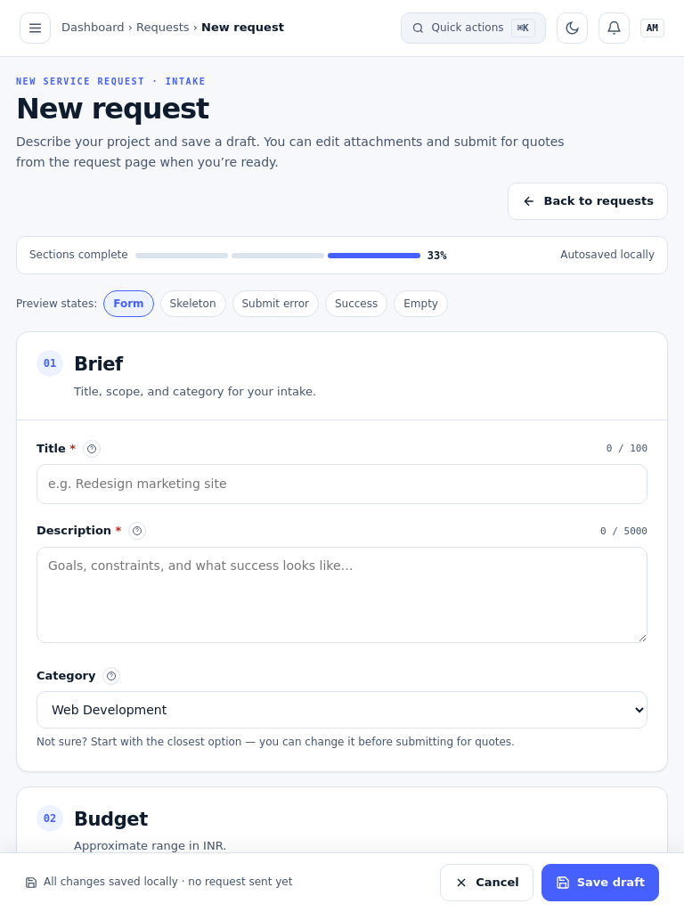

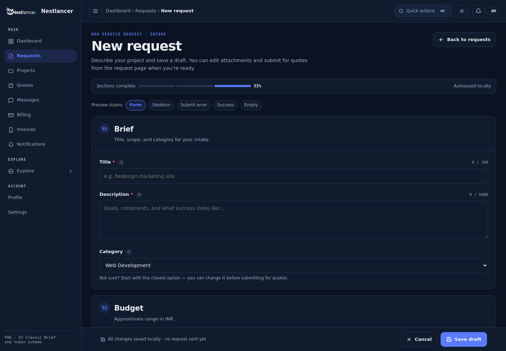

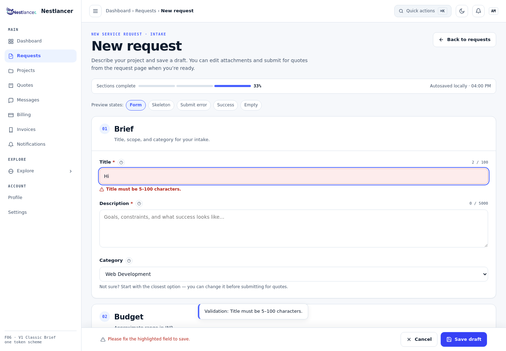

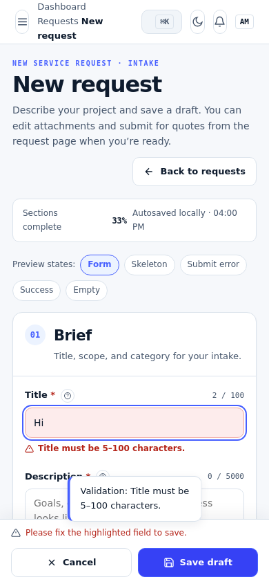

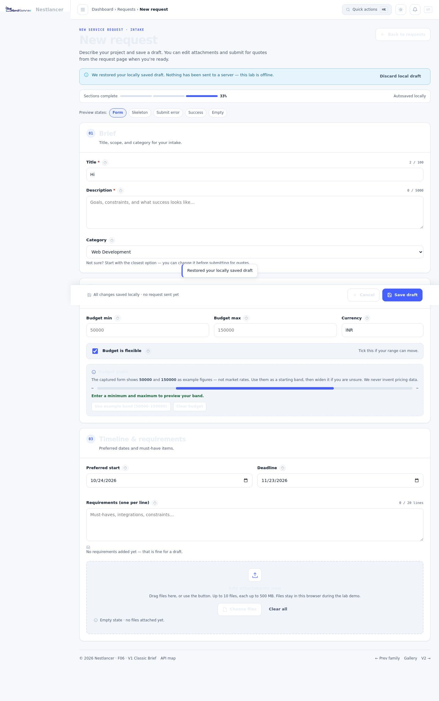
#1 · V2 · Three Steps — 77.5
Source (unmodified): client-portal-lab/families/F06-request-new-form/V2/index.html
· Raw evidence: review-evidence/raw/F06-V2-raw.json
Task clarity (4/4): Stepper names each step and its contents up front (Brief: title-description-category; Budget: min-max-currency; Timeline: dates-requirements) - the whole commitment is visible before typing.
Usability (3/4): Continue with an invalid short title stayed on Step 1, marked the field invalid and alerted (probe3) - gating works and is lossless; Save draft is hidden until later steps, mitigated by 'all answers kept' copy + autosave.
Visual craft (3/4): Focused single-step card, calm stepper, clear footer trio Cancel/Back/Continue to Budget.
Responsive (3/4): Step list stacks into a readable card on mobile; the Continue button wraps to two lines but the sticky footer fits with no scroll sideways.
Accessibility (2/4): Contrast x4 and 10 small targets; step state is text-reinforced ('Step 1 of 3'), not colour-only.
Integrity (3/4): Field constraints carried into step copy; restore/autosave behaviour stated honestly.
Interaction / task results (V2)
| Task | Result |
|---|---|
| T1_first_screen | H1='New request'; see desktop/mobile top screenshots |
| T2_keyboard | 12/12 stops focus-styled, 12/12 in viewport |
| T3_core_desktop | error (TimeoutError: locator.scrollIntoViewIfNeeded: Timeout 29991.618000000002ms exceeded. Call ) |
| T3_core_mobile | error (TimeoutError: locator.scrollIntoViewIfNeeded: Timeout 29992.684ms exceeded. Call log: - ) |
| T3_supp_desktop | pass: Wizard Next with invalid short title (Save draft is hidden until later step) |
| T4_theme | toggle: pass (dark false->true); dark capture applied=True |
| T5_demo_honesty | data-demo click produced no visible toast in probe |
| T6_mobile | h-scroll mobile=0; nav probe opened=True btnW=19; tap<24px=10 |
| T7_axe | desktop: color-contrast x4; dark: color-contrast x5 |
| T3_note | capture2 Save-draft click timed out because the button is hidden on step 1; probe3 wizard-Next validation substituted (same validation intent) |
Issues (3)
- minor
F06-V2-I1axe desktop: color-contrast x4 (a[aria-current="page"], button[data-step="1"] > span:nth-child(2)) Fix any of the following: Element has insufficient color contrast of 4.33 (foreground color: #465fff, background color: (axe-core 4.10.2 desktop) - minor
F06-V2-I2axe dark: color-contrast x5 (a[aria-current="page"], button[data-step="1"] > span:nth-child(2)) Fix any of the following: Element has insufficient color contrast of 3.94 (foreground color: #5b7bff, background color: (axe-core 4.10.2 dark) - minor
F06-V2-I310 mobile tap targets under 24px, e.g. [{'text': 'Open navigation menu', 'w': 19, 'h': 35}, {'text': 'Switch to dark mode', 'w': 19, 'h': 35}, {'text': '6 unread notifications', 'w': 19, 'h': 35}] (raw tapTargetsMobile)

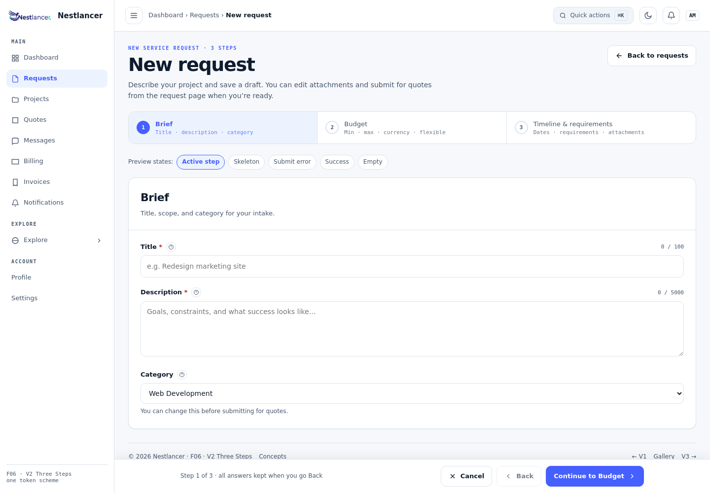

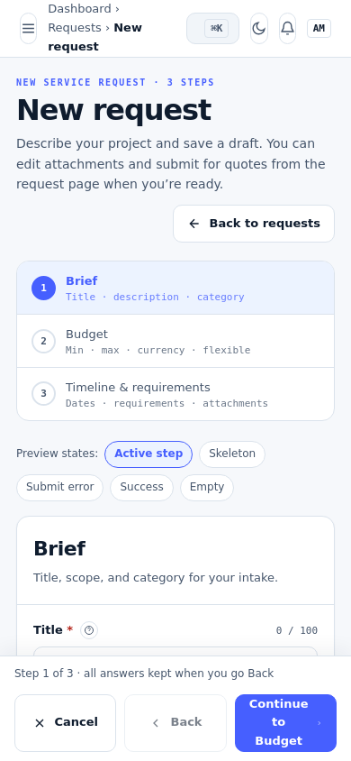

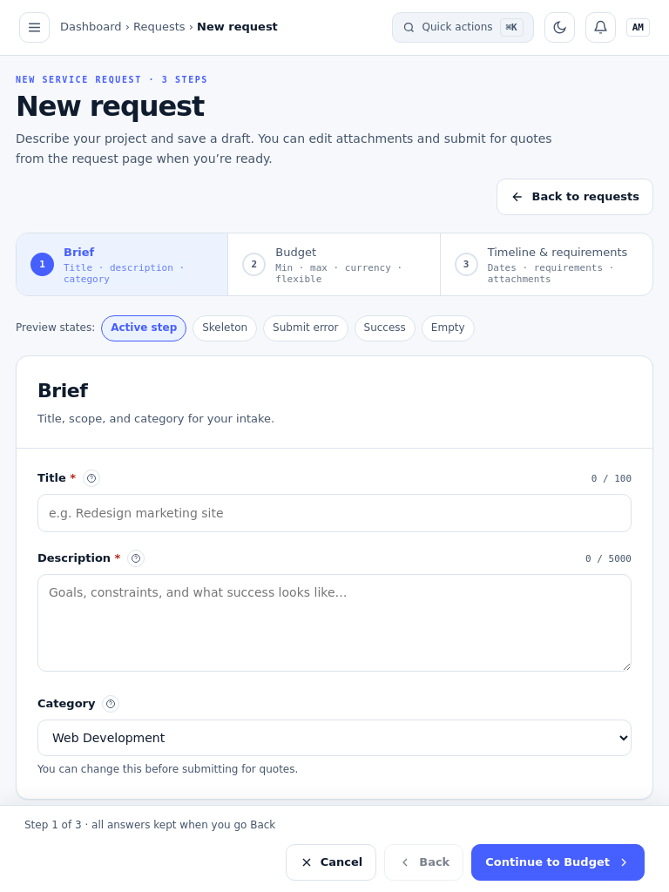

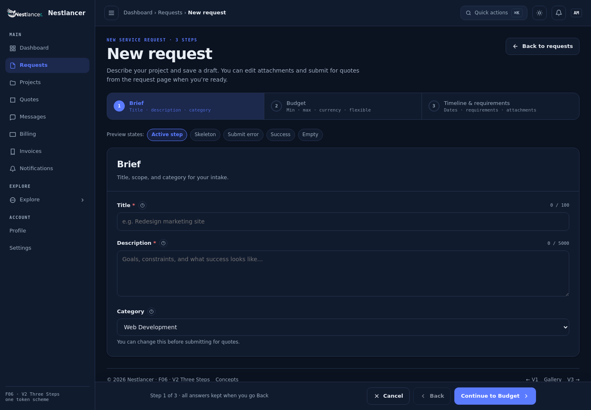

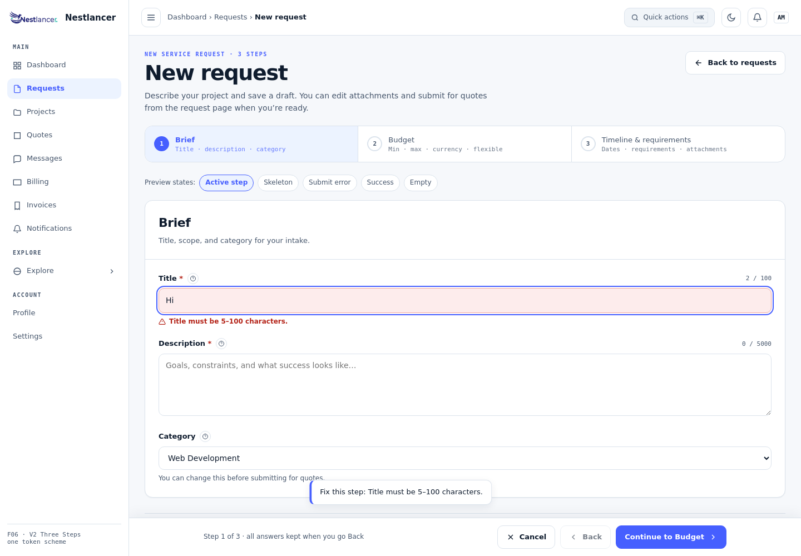

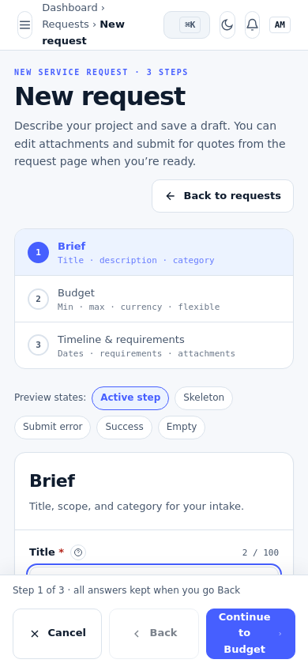

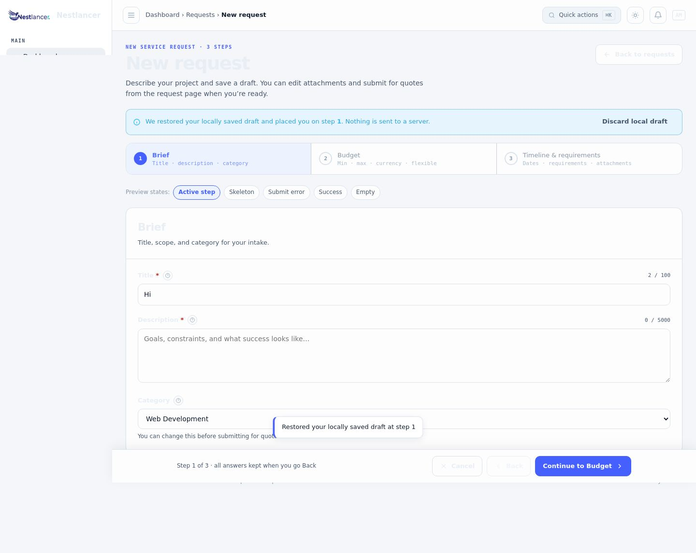
#4 · V3 · Compact Desk — 63.8
Source (unmodified): client-portal-lab/families/F06-request-new-form/V3/index.html
· Raw evidence: review-evidence/raw/F06-V3-raw.json
Task clarity (3/4): All-fields-on-one-desk with live stat chips (Title 0/100, Budget not set, Attachments 0/10) gives instant completeness feedback - though a green tick on 'Requirements 0 lines' reads as done when it is empty.
Usability (3/4): Validation behaved like the family (3 invalid + preserved-answers alert); the budget ruler makes min/max entry tangible.
Visual craft (2/4): Density tips into clutter: six stat chips, five state toggles and a ruler compete with the fields themselves.
Responsive (2/4): On mobile the one-screen premise collapses into a long scroll and the chip rows push the first field to mid-screen; sticky footer remains reachable.
Accessibility (2/4): Contrast x5; status chips rely partly on colour/glyph microtext. Focus order remains field-logical.
Integrity (3/4): Budget guide explicitly uses only captured placeholders and disclaims market rates - a documented honesty strength.
Interaction / task results (V3)
| Task | Result |
|---|---|
| T1_first_screen | H1='New request'; see desktop/mobile top screenshots |
| T2_keyboard | 12/12 stops focus-styled, 12/12 in viewport |
| T3_core_desktop | pass via Save draft w/ invalid short title |
| T3_core_mobile | pass via Save draft w/ invalid short title |
| T4_theme | toggle: pass (dark false->true); dark capture applied=True |
| T5_demo_honesty | honest feedback shown: |
| T6_mobile | h-scroll mobile=0; nav probe opened=True btnW=19; tap<24px=9 |
| T7_axe | desktop: color-contrast x5; dark: color-contrast x6 |
Issues (3)
- minor
F06-V3-I1axe desktop: color-contrast x5 (a[aria-current="page"], button[data-state="populated"]) Fix any of the following: Element has insufficient color contrast of 4.33 (foreground color: #465fff, background color: (axe-core 4.10.2 desktop) - minor
F06-V3-I2axe dark: color-contrast x6 (a[aria-current="page"], button[data-state="populated"]) Fix any of the following: Element has insufficient color contrast of 3.94 (foreground color: #5b7bff, background color: (axe-core 4.10.2 dark) - minor
F06-V3-I39 mobile tap targets under 24px, e.g. [{'text': 'Open navigation menu', 'w': 19, 'h': 35}, {'text': 'Switch to dark mode', 'w': 19, 'h': 35}, {'text': '6 unread notifications', 'w': 19, 'h': 35}] (raw tapTargetsMobile)

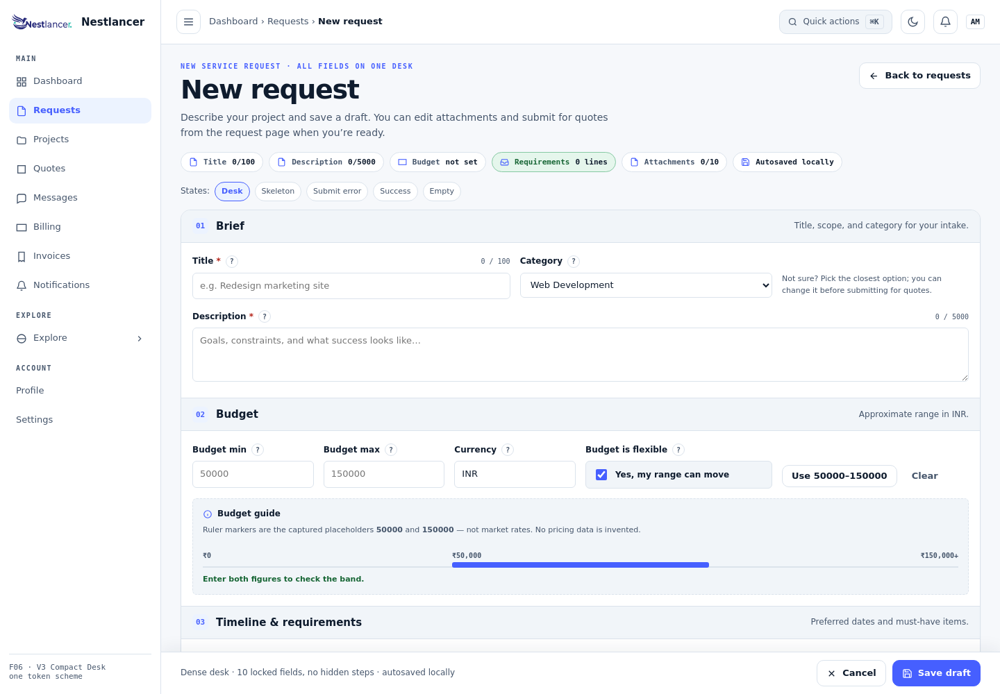

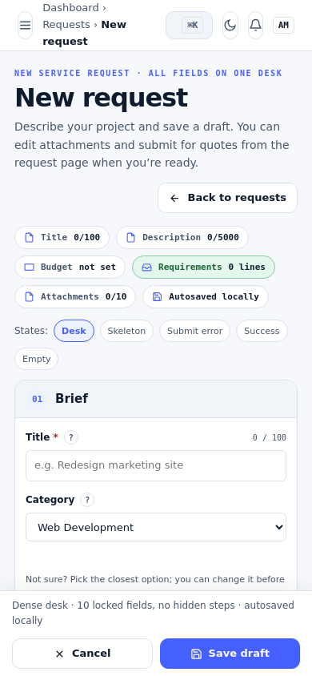

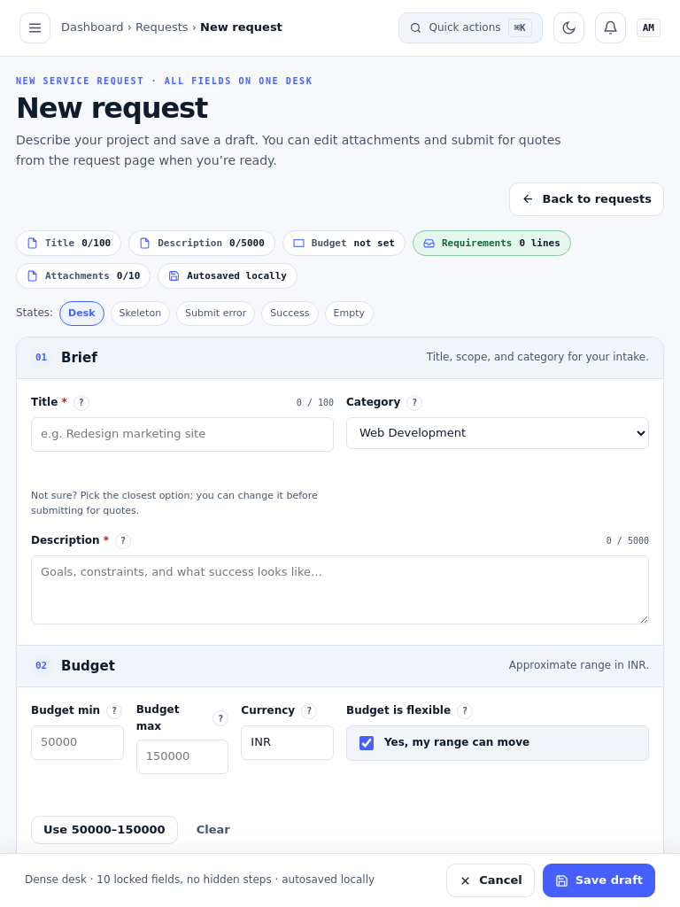

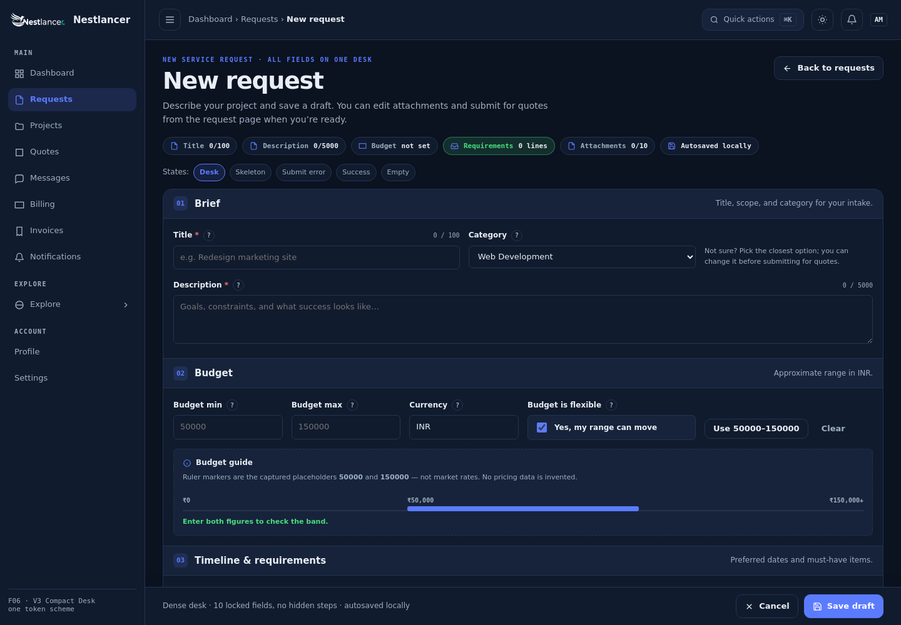

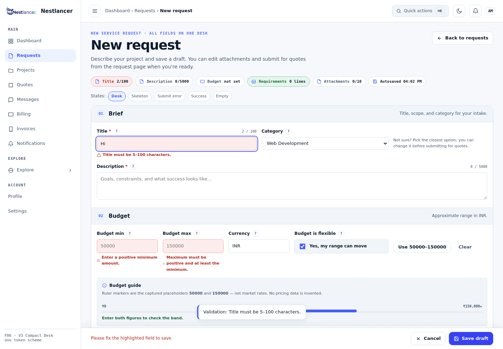

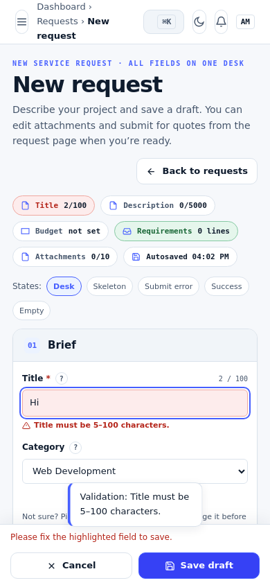

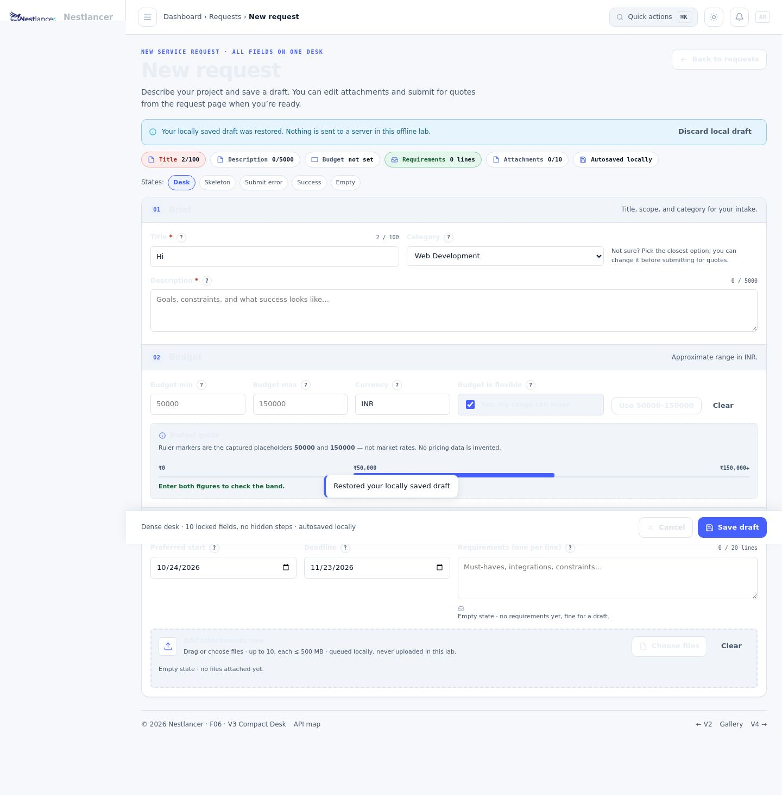
#5 · V4 · Guided Narrative — 58.8
Source (unmodified): client-portal-lab/families/F06-request-new-form/V4/index.html
· Raw evidence: review-evidence/raw/F06-V4-raw.json
Task clarity (3/4): Question-led labels ('What are we building?', 'What should it cost?') are welcoming and each keeps its character counter; chapter TOC gives orientation.
Usability (2/4): Validation works, but the narrative stretches the 10-field job to a 2,618px desktop scroll (family's longest) - slow to complete and to re-find a field.
Visual craft (3/4): Editorial rhythm and generous type are genuinely pleasant; length is the cost.
Responsive (2/4): Chapter tab labels clip at 390px ('Tim... Whe') and the form becomes a very long single scroll; sticky footer still works.
Accessibility (1/4): Axe color-contrast x44 in light mode (x25 dark) - by far the family's worst: narrative helper/microtext fails AA across the page. Multiple serious barriers for low-vision users.
Integrity (3/4): Reworded questions still carry the locked constraints (0/100, 0/5000); autosave/resume stated. No invented fields.
Interaction / task results (V4)
| Task | Result |
|---|---|
| T1_first_screen | H1='New request'; see desktop/mobile top screenshots |
| T2_keyboard | 12/12 stops focus-styled, 12/12 in viewport |
| T3_core_desktop | pass via Save draft w/ invalid short title |
| T3_core_mobile | pass via Save draft w/ invalid short title |
| T4_theme | toggle: pass (dark false->true); dark capture applied=True |
| T5_demo_honesty | honest feedback shown: |
| T6_mobile | h-scroll mobile=0; nav probe opened=True btnW=19; tap<24px=19 |
| T7_axe | desktop: color-contrast x44; dark: color-contrast x25 |
Issues (4)
- minor
F06-V4-I1axe desktop: color-contrast x44 (a[aria-current="page"], button[data-state="populated"]) Fix any of the following: Element has insufficient color contrast of 4.33 (foreground color: #465fff, background color: (axe-core 4.10.2 desktop) - minor
F06-V4-I2axe dark: color-contrast x25 (a[aria-current="page"], button[data-state="populated"]) Fix any of the following: Element has insufficient color contrast of 3.94 (foreground color: #5b7bff, background color: (axe-core 4.10.2 dark) - minor
F06-V4-I319 mobile tap targets under 24px, e.g. [{'text': 'Open navigation menu', 'w': 19, 'h': 35}, {'text': 'Switch to dark mode', 'w': 19, 'h': 35}, {'text': '6 unread notifications', 'w': 19, 'h': 35}] (raw tapTargetsMobile) - major
F06-V4-I4Contrast failures across 44 light-mode nodes (helper/microtext) (axe desktop)

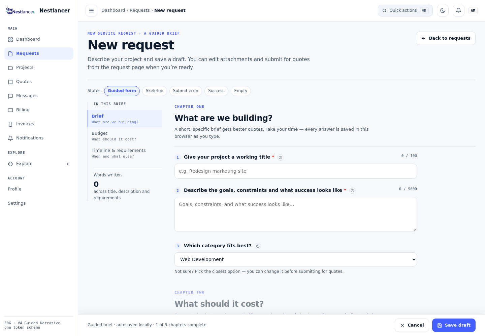

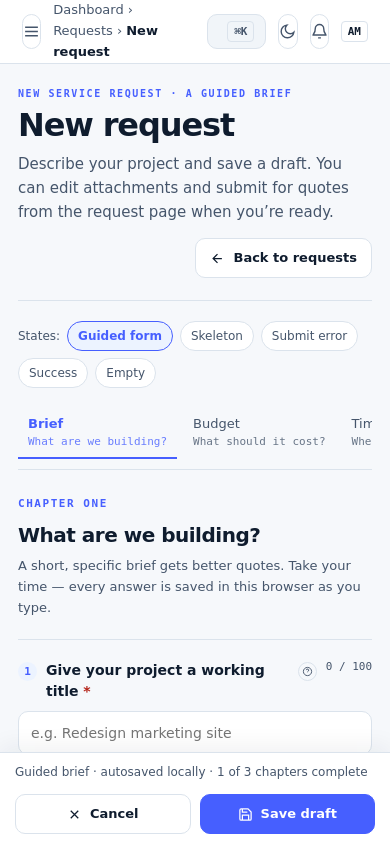

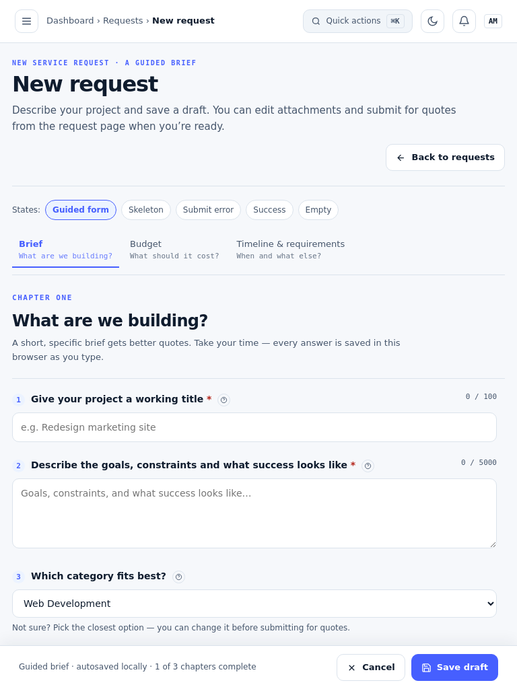

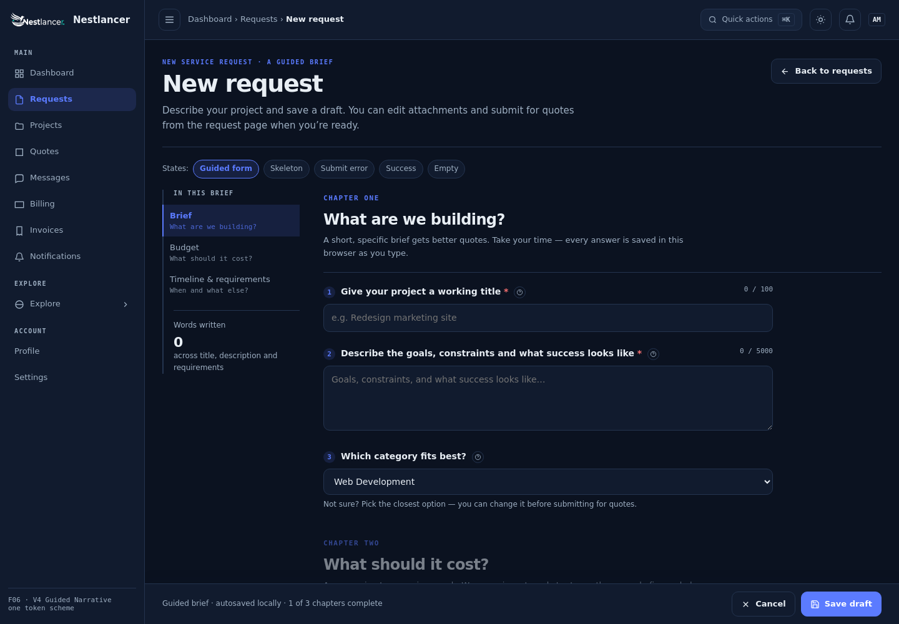

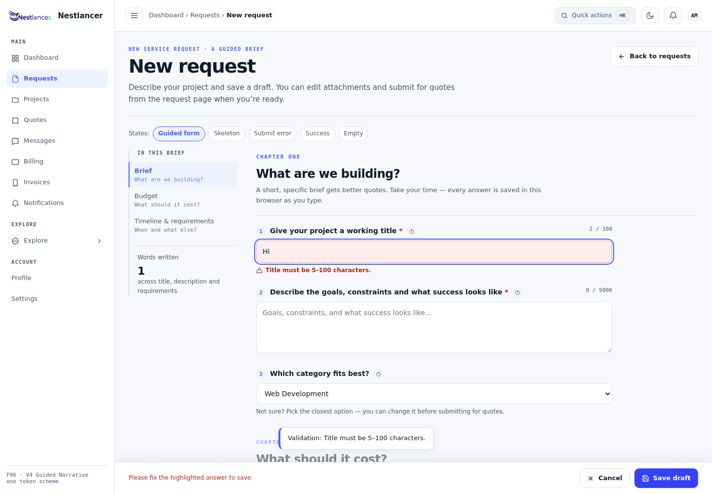

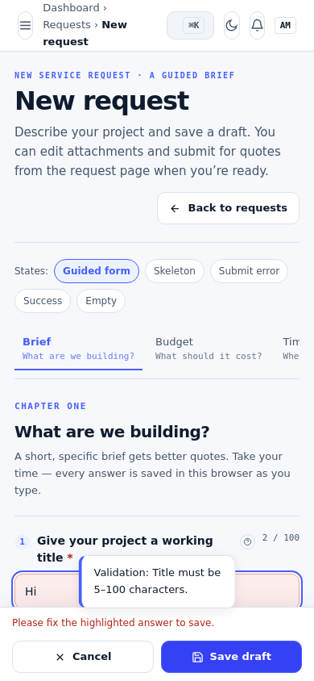

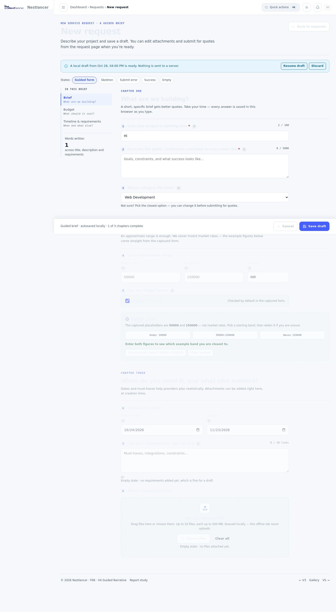
#2 · V5 · Bento Split — 73.8
Source (unmodified): client-portal-lab/families/F06-request-new-form/V5/index.html
· Raw evidence: review-evidence/raw/F06-V5-raw.json
Task clarity (4/4): Sticky live 'Request card' preview shows exactly what the receiver will see, with Budget 'Not set' and a Draft badge - purpose and completeness are unambiguous on desktop.
Usability (3/4): Save/validation behaves as family (3 invalid + preserved alert); collapsible bento sections keep the desk scannable.
Visual craft (3/4): Tidy bento + preview composition; LIVE pill and draft states are crisply presented.
Responsive (2/4): On mobile the preview card renders before the first editable field, pushing actual typing below the fold - the preview-first order should flip at small widths.
Accessibility (2/4): Contrast x5 and 19 under-24px targets (collapse/help affordances); preview is text, so it remains AT-readable.
Integrity (3/4): Preview card explicitly says it 'is not submitted anywhere' - exemplary demo honesty; fields locked as spec.
Interaction / task results (V5)
| Task | Result |
|---|---|
| T1_first_screen | H1='New request'; see desktop/mobile top screenshots |
| T2_keyboard | 12/12 stops focus-styled, 12/12 in viewport |
| T3_core_desktop | pass via Save draft w/ invalid short title |
| T3_core_mobile | pass via Save draft w/ invalid short title |
| T4_theme | toggle: pass (dark false->true); dark capture applied=True |
| T5_demo_honesty | honest feedback shown: |
| T6_mobile | h-scroll mobile=0; nav probe opened=True btnW=19; tap<24px=19 |
| T7_axe | desktop: color-contrast x5; dark: color-contrast x6 |
Issues (3)
- minor
F06-V5-I1axe desktop: color-contrast x5 (a[aria-current="page"], button[data-state="populated"]) Fix any of the following: Element has insufficient color contrast of 4.33 (foreground color: #465fff, background color: (axe-core 4.10.2 desktop) - minor
F06-V5-I2axe dark: color-contrast x6 (a[aria-current="page"], button[data-state="populated"]) Fix any of the following: Element has insufficient color contrast of 3.94 (foreground color: #5b7bff, background color: (axe-core 4.10.2 dark) - minor
F06-V5-I319 mobile tap targets under 24px, e.g. [{'text': 'Open navigation menu', 'w': 19, 'h': 35}, {'text': 'Switch to dark mode', 'w': 19, 'h': 35}, {'text': '6 unread notifications', 'w': 19, 'h': 35}] (raw tapTargetsMobile)

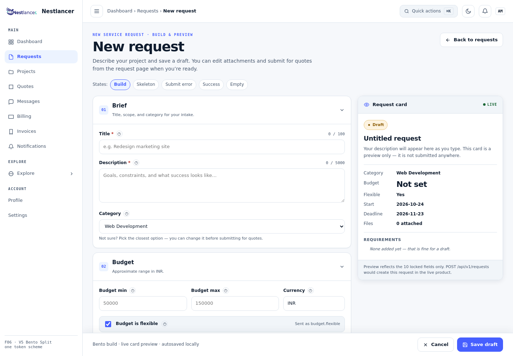

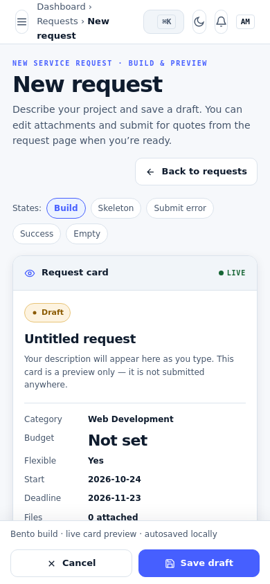

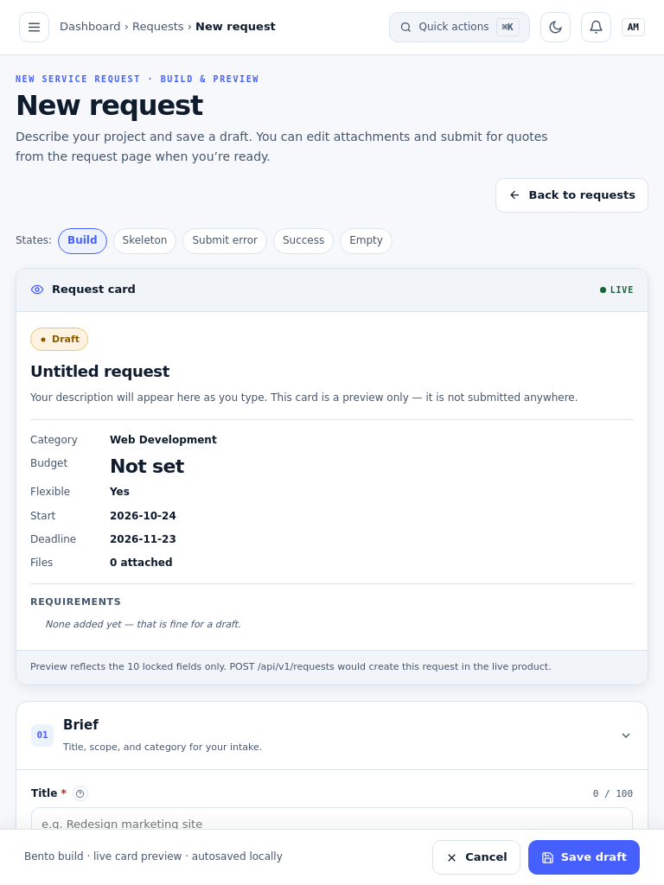

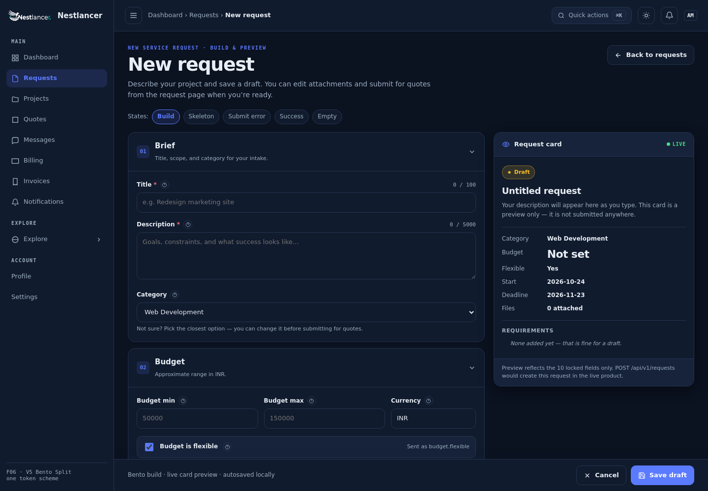

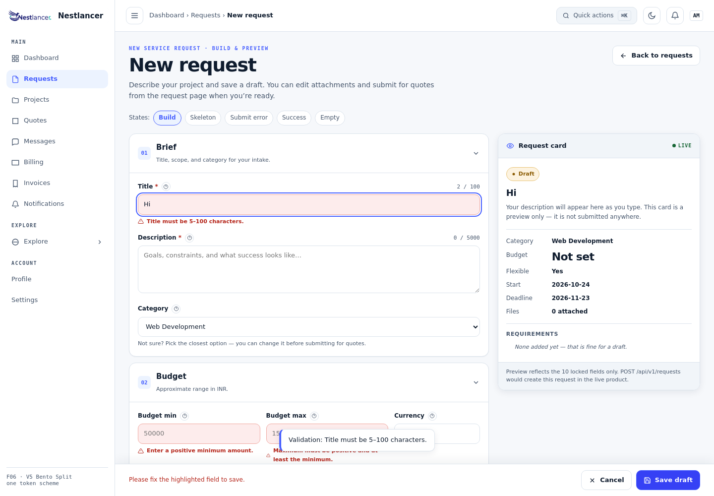

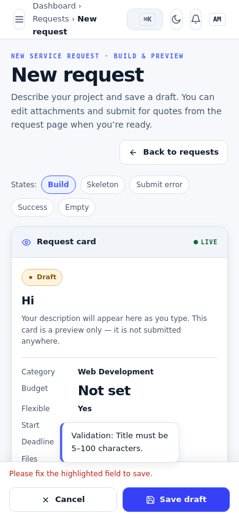

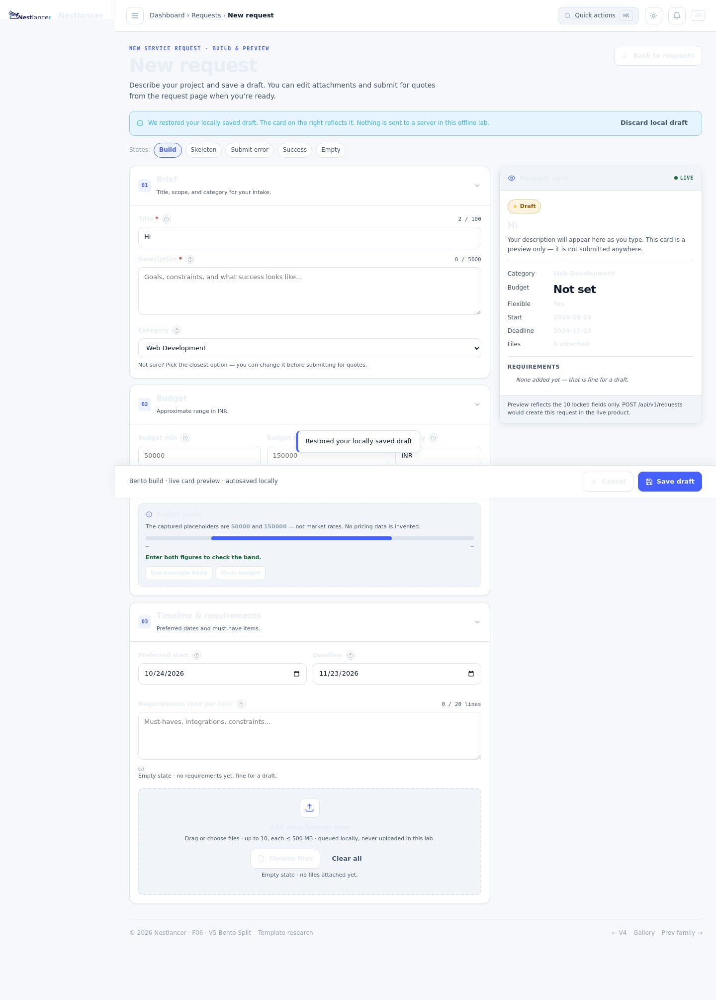
Blind comparison boards
Seeded labels A–E; the screenshots contain in-page version identifiers, so true blinding was incomplete. Mapping (review-evidence/raw/blind-mapping.json): A=V3 · B=V5 · C=V1 · D=V4 · E=V2.
One AI evaluator generated the board and mapping; board notes above were recorded in the session transcript before the mapping file was opened. This is a bias-reduction aid, not true experimental blinding.

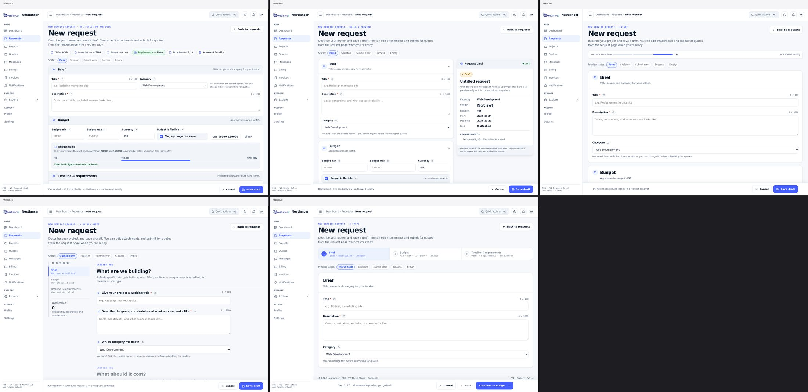

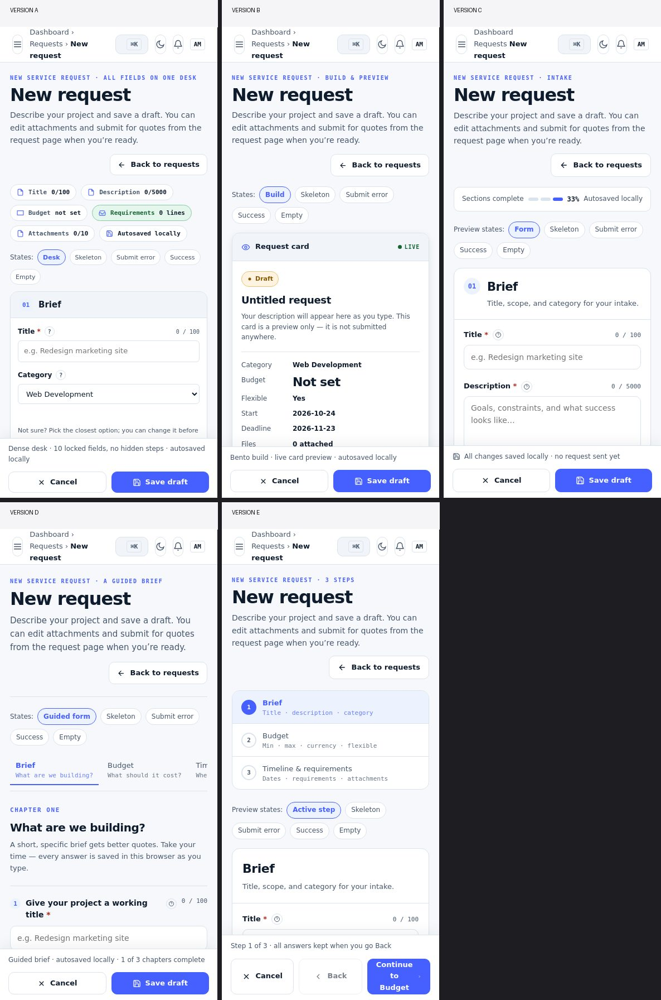
Pairwise consistency check (one evaluator, not votes)
| Pair | Better for family task | Reason |
|---|---|---|
| V1 vs V2 | V2 | Gated steps reduce errors vs one long classic page |
| V1 vs V3 | V1 | Calmer completion model; desk clutter on mobile |
| V1 vs V4 | V1 | Shorter job + far better contrast evidence |
| V1 vs V5 | V5 | Live preview feedback beats static sections (desktop); narrow |
| V2 vs V3 | V2 | Step gating beats desk density for correctness |
| V2 vs V4 | V2 | Focused steps vs long low-contrast narrative |
| V2 vs V5 | V2 | Wizard prevents late surprises; V5 preview is close second |
| V3 vs V4 | V3 | Compact validity vs length+contrast failures |
| V3 vs V5 | V5 | Receiver-view preview beats stat chips |
| V4 vs V5 | V5 | Bento efficiency + contrast evidence |
One evaluator's 10-pair consistency check (S4.2), not human votes; no Bradley-Terry/Elo applied. All 10 agree with the rubric order; the V1-V4 pair prompted the documented V4 task-clarity re-check.
Coverage, limitations, change log
Persona coverage (no votes): Coverage relevance only: shared mobile header/menu defect is most relevant to phone one-handed and motor-access profiles; 4.33:1 contrast to low-vision profiles; V4 missing H1 and V1 inert tab pattern to keyboard/screen-reader profiles; V3 duplicated payment to cognitive-access and first-time profiles; V5 context-thin density to first-time profiles. No persona preferred or voted.
Task script: Generic T1-T7 + family core: enter invalid 2-char title and Save draft (or wizard Continue on V2) - record aria-invalid count, alert text and answer preservation. No file upload performed.
- First-pass scores assigned from blind boards + raw evidence before reading prior winner claims (still unread).
Environment: Chromium 131.0.6778.33 (HeadlessChrome, Playwright bundled build chromium-1148) · Playwright 1.49.1 (pinned in review-evidence/tooling/package.json)
· axe-core 4.10.2 (pinned) · NOT cross-machine pixel-reproducible: no Docker in sandbox; pinned Playwright/Chromium used consistently for every page in this run.
Full record: review-evidence/review-manifest.json; machine data: review-evidence/scores.json.